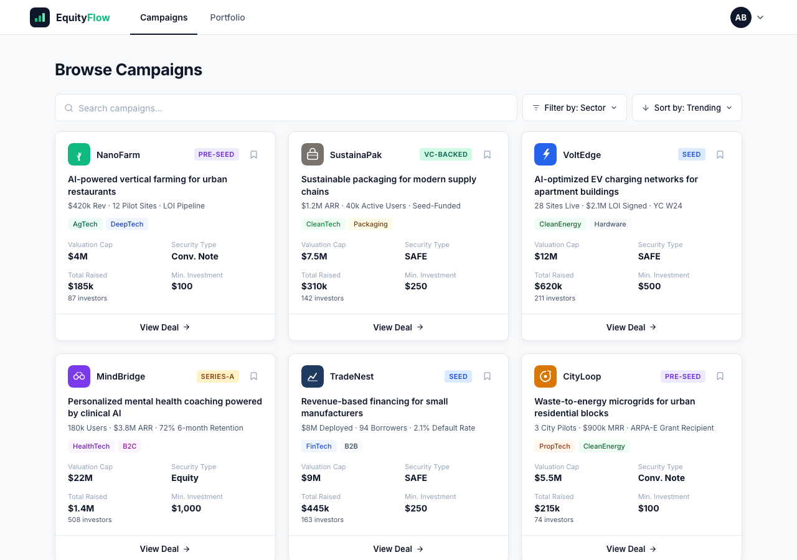
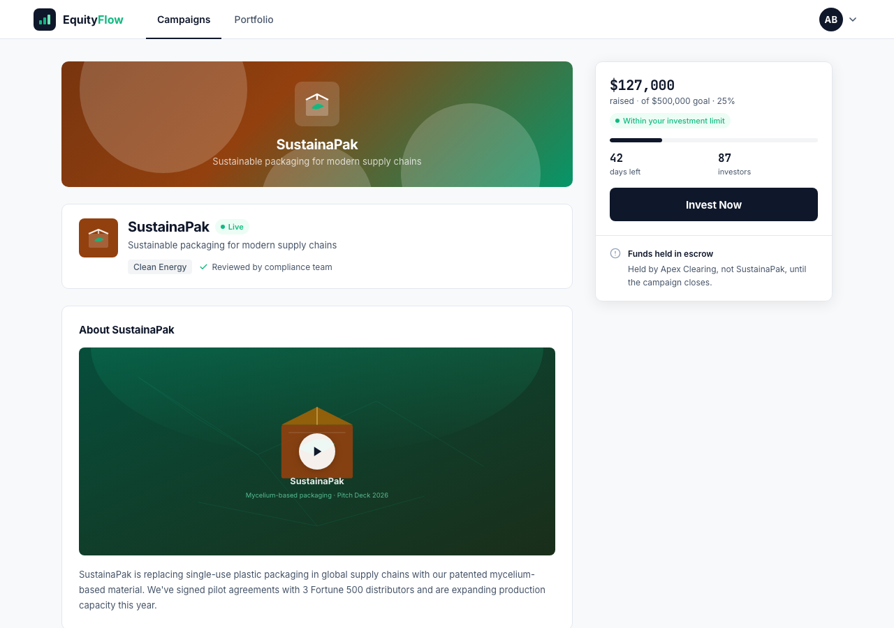
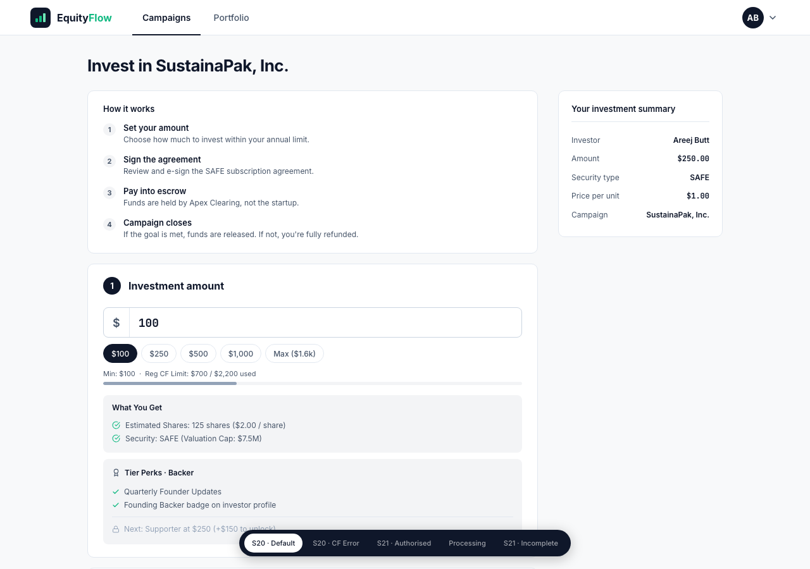
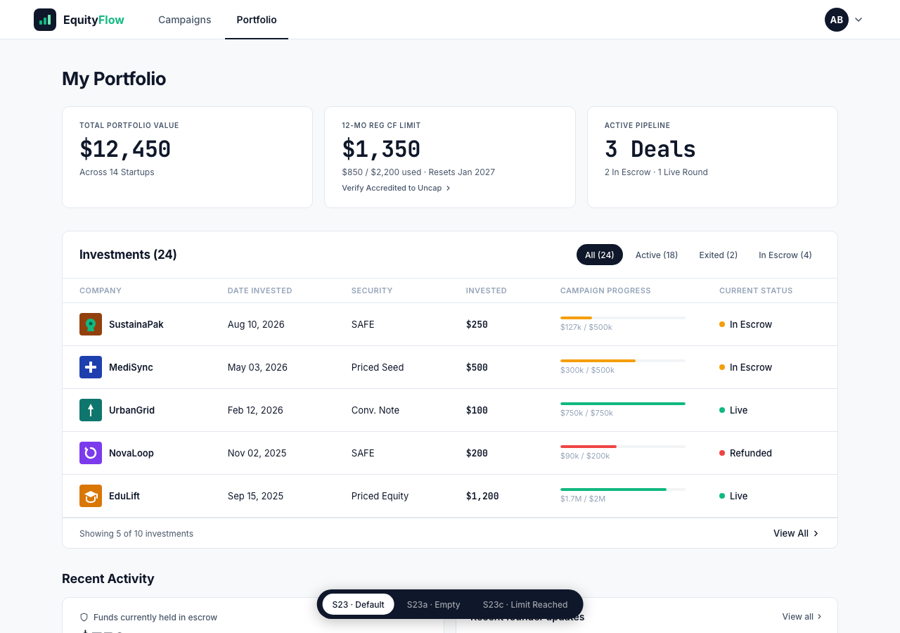
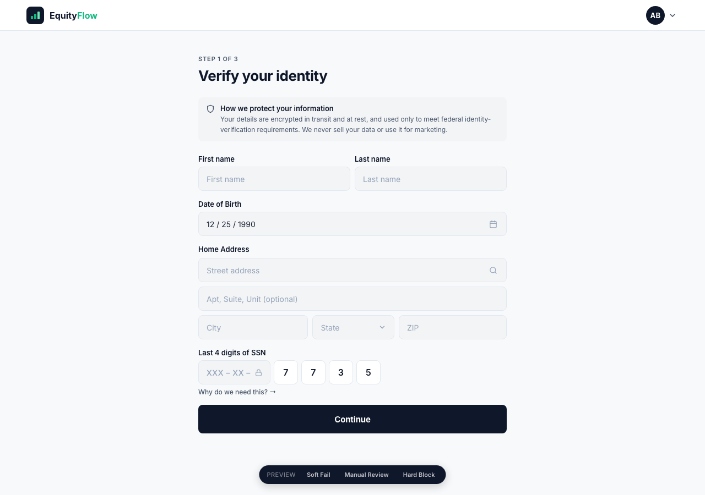
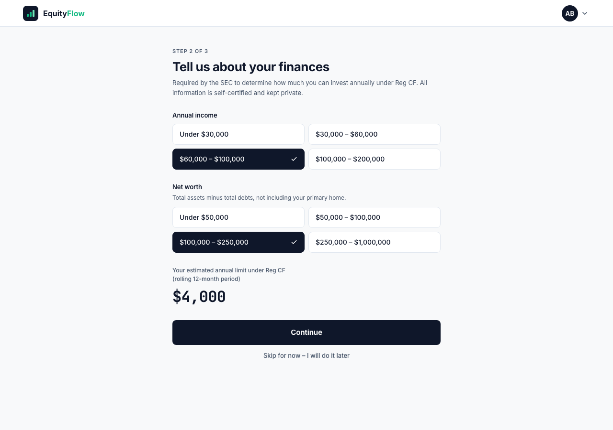
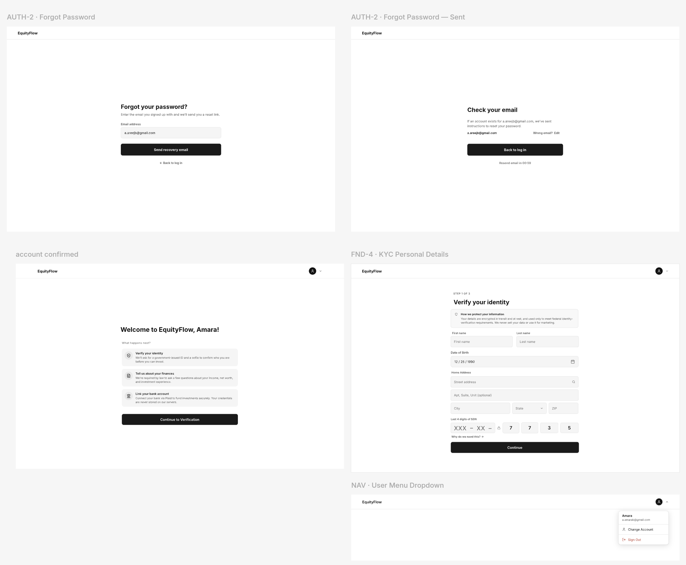

Investing is a legal act. The interface has to carry that weight without scaring anyone off.
An invite-only equity crowdfunding platform where vetted founders raise capital from everyday investors, and where every screen sits on top of federal rules: identity checks, suitability questions, annual investment caps, escrow. The design problem was never the campaign grid. It was making compliance feel like guidance instead of a wall.

Research came first because the constraints were legal, not aesthetic. Nothing could be drawn until I understood what the law required a screen to ask.
Equity crowdfunding opened startup investing to people who are not venture capitalists. The rules that made that legal also made it heavy. Before anyone can put in $100, they have to prove who they are, disclose their income and net worth, connect a bank account, and stay inside an annual cap they have probably never heard of.
Most platforms handle this by front-loading it. A wall of forms, then the interesting part. First-time investors drop out at the forms, and the ones who make it through still do not understand what they bought or when their money moves.
Founders have the mirror problem. They are asked to publish audited numbers, a Form C, and ongoing updates, in a layout built for a pitch deck.
EquityFlow serves three groups whose interests do not fully align. Investors want speed. Founders want visibility. Operations wants a paper trail. Every screen belongs to one of them, and the permissions had to be settled before the flows.
The whole investor product resolves to two tabs: Campaigns and Portfolio. Everything else is either a gate on the way in or a detail view hanging off one of those two. Keeping the top-level nav at two items was the first decision I made and the one I defended most often.
Interest comes first, verification second. A new user can browse every campaign, open the Form C, and read the Q&A board before the platform asks for a single document. The gates only fire once they commit to an amount, at which point the ask has a reason attached to it.
Four legal requirements shaped more of this product than any visual choice. Each one is a moment where the platform has to say no, or not yet, to someone who is trying to give it money. I treated each as a copy and layout problem rather than an error.
Six of the core investor screens. The layout logic is consistent across all of them: a two-tab nav, a 1200px content column, and a sticky right rail wherever a decision has to stay in view while the reader scrolls.





Every screen was resolved in grayscale first. No color, no logo, no real numbers, only hierarchy, field order and states. It made the flow arguments cheap to lose. Colour and data arrived afterwards and changed almost nothing structural.

Before choosing a single colour or type size, I collected references in Figma: banking and brokerage products, document-heavy dashboards, and a few editorial layouts for how they handle long disclosure text. The board was a way to argue about tone with something on the wall instead of in the abstract.
A financial product earns trust by being quiet. The palette is mostly neutral: near-black for actions, one green for money and live status, one blue for focus, one red for limits.
The first version of the portfolio dashboard only existed populated. That is the state a user is least likely to see first. I set a floor: no component ships until its whole state set is drawn, and every screen archetype has to answer six questions.
By the tenth screen the prototype had drifted. Three button heights, two input borders, a nav that changed padding depending on which screen I had built most recently. Prompting an AI for the next screen made it worse, because there was nothing for it to be consistent with.
So I stopped building screens and wrote the system down. The harness is a router plus a rulebook: one always-loaded file of about a hundred lines that maps a question to the exact documents needed to answer it, and twenty pattern files loaded only when the router points to them.
The harness went through three revisions. The first was a generic component library that described buttons nobody was using. The second was rewritten from the live prototype, so every entry described something that actually existed. The third added the creation gate, which is the part that changed my behaviour: when nothing fits, the answer is to stop and name the gap, not to invent a fourth button height at three in the morning.
The existing platforms cluster in two places: polished discovery with compliance buried in a modal, or thorough compliance in an interface built for professionals. EquityFlow aims at the corner nobody occupies — retail-first, with the rails visible.
The thing I would carry into any product, not just a regulated one: write the system down before you scale the screens. Five weeks in, the harness was doing more for consistency than any amount of care on individual layouts, because it moved the decisions out of my head and into a file I could point at.
What is still open: The founder side exists only as flows, not screens (raise setup, Form C submission and the update composer) are all specified but undrawn. The operations console is the same. And the whole product is desktop-only right now; the two-column detail pages with sticky rails are the pieces that will need real rethinking on a phone, not just reflowing.
If I ran it again I would test the suitability step with real first-time investors early. It is the screen where the platform sounds least like it is on your side, and I only have my own judgment on the copy.